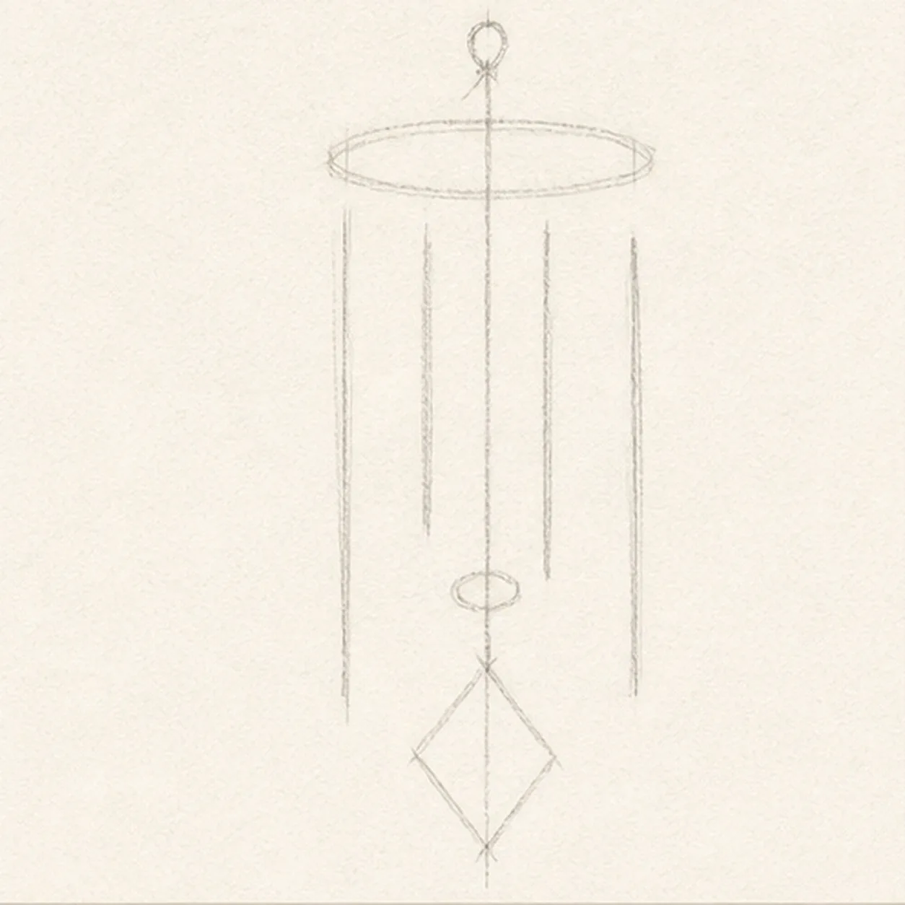
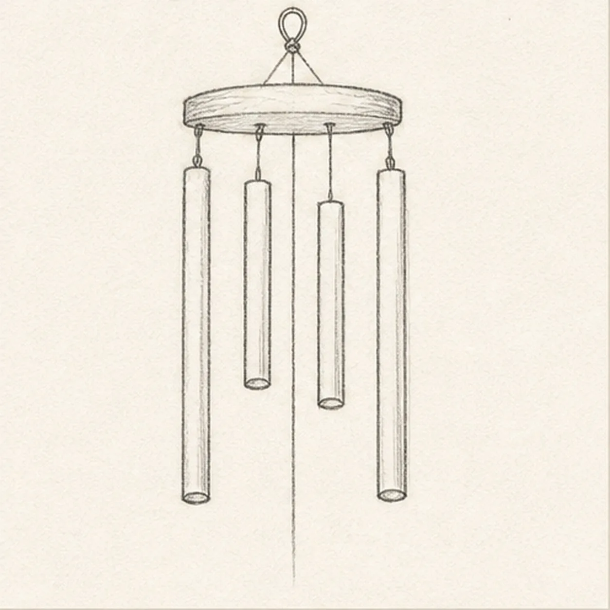
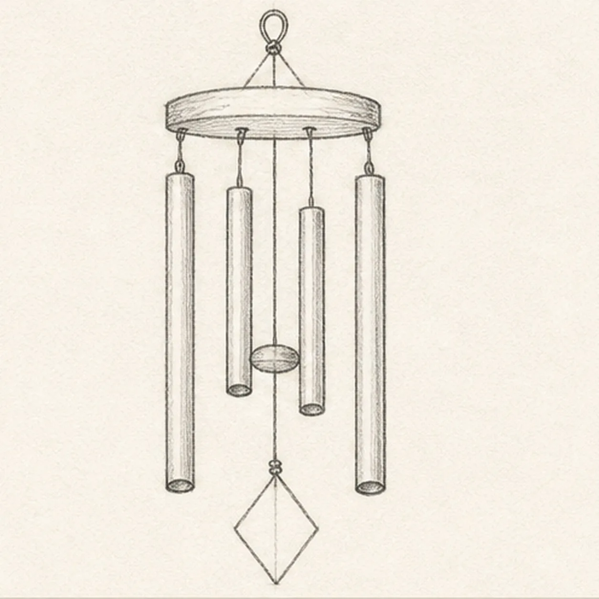
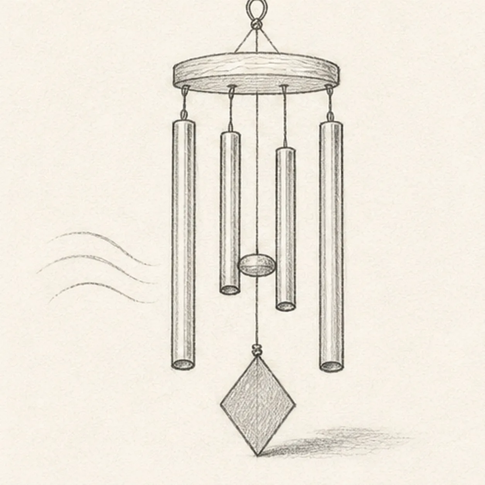
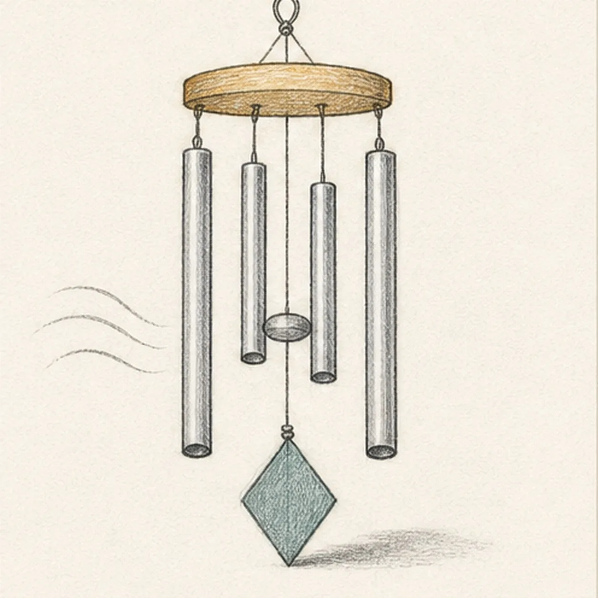

From the archive
Let's draw a set of hanging wind chimes
Treat this as one small practice round: build the subject lightly, notice the shapes, then darken only the lines that help the finished sketch.
-
01

Hang the chime guides
Draw a small hanging loop and cap ellipse, drop one center cord, place exactly four separated tube axes at alternating lengths, then mark the clapper and diamond-sail positions.
Sketch tip: Ghost the four tube axes before touching down and compare the three paper gaps between them. Keep the cap, clapper, and sail footprints pale instead of finishing cord lines those forms will cover.
-
02

Shape the cap and tubes
Build the round wooden cap, attach four thin strings, and wrap the four axes with exactly four hollow metal tubes while preserving their staggered lengths.
Sketch tip: Rotate the page for each tube edge and draw it in one relaxed pass. Count four separate bodies and keep visible paper between neighbors so none disappear behind another.
-
03

Build the clapper and sail
Add the round clapper disk between the inner tubes, connect the diamond-shaped wind sail below it, then draw all four lower tube openings and the small hanging knots.
Sketch tip: Use the center cord to align the clapper and sail, but let the four tube lengths alternate around them. Flatten each lower opening into a small related ellipse rather than four unrelated circles.
-
04

Suggest metal and motion
Draw one long reflection line on each of the four tubes, add restrained grain to the cap, exactly three breeze arcs, and one faint cast shadow.
Sketch tip: Curve the three breeze arcs as a loose family instead of copying one shape. Keep the metal reflections narrow and broken so the tubes still feel sketched rather than polished.
-
05

Shade the wind chimes
Layer cool-gray pencil over the tubes and clapper, warm ochre over the cap, muted teal over the sail, and soft graphite into the strings and established shadow.
Sketch tip: Pull the gray strokes along each tube and leave a stripe of paper as reflected light. Use lighter pressure on the inner tubes so their overlaps stay easy to read.
-
06

Finish the breezy study
Strengthen the keeper contours and clarify the established loop, cap, four strings and tubes, clapper, sail, knots, reflections, three breeze arcs, restrained color, and shadow.
Sketch tip: Count all four tube openings and trace the center cord once, then stop. A porch, tree, bird, bell, extra ornament, or outdoor scene would distract from the hanging mechanism.